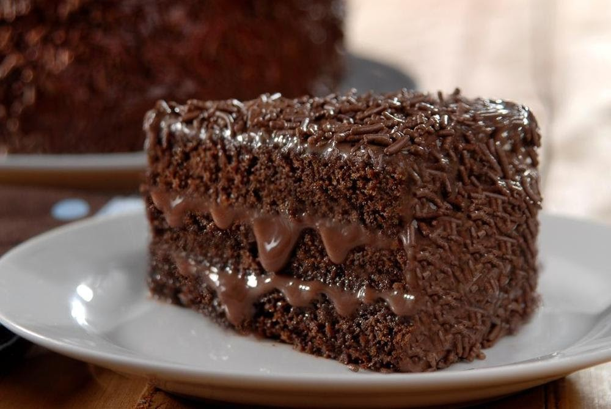

Chocolate Cake

Description
A chocolate cake is a cake made with chocolate or cocoa. The ingredients are put into a bowl and mixed together; then the mixed ingredients are put into a cake tin and put in an oven until it is fully cooked. Then the cake is taken out of the oven and placed on a cooling stand. If the cake maker wants to, they can ice the cake, when it has cooled down, by spreading thick icing on it. Chocolate cakes are a sold in shops as well as made at home. They are a sweet food and should not be eaten all the time, which would be unhealthy.
Ingredients
- 1 cup of butter
- 2 cups of white sugar
- 2 eggs
Steps
- Preheat oven to 350 degrees F (175 degrees C). If using layers, grease and line the pans with parchment paper. If using a 9 X 13 pan, grease and dust with cocoa powder. Sift together the cocoa, flour, baking soda and salt. Set aside.
- In a large bowl, cream together the butter and sugar until light and fluffy. Beat in the eggs one at a time. Alternately beat in the flour mixture and the buttermilk, mixing just until incorporated. Add the boiling water and beat for one full minute.
- Bake in the preheated oven for 30 to 40 minutes, or until a toothpick inserted into the center of the cake comes out clean. Allow to cool.